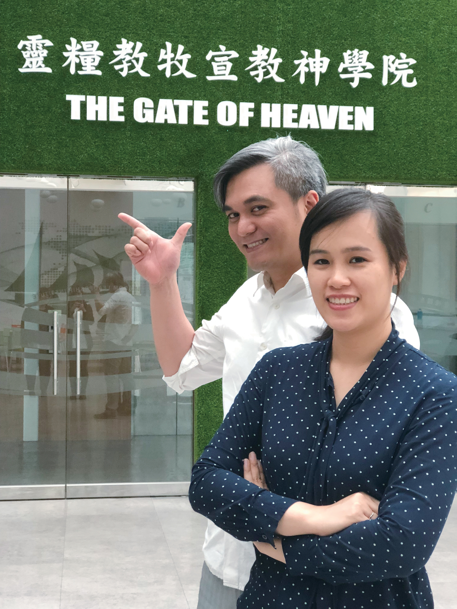

關於我們
龍岡靈糧堂於2014年4 月，受中壢靈糧堂母堂差派建立教會至今。盼望藉著福音的大能，使人領受主耶穌的愛，重生得救，得豐盛生命。
我們的異象
培育傳愛門徒、守護幸福家庭
建造榮耀教會、植堂轉化城市
承接中壢母堂的異象，根據大使命的託付，教會積極培育傳揚主愛的門徒，透過聖經真理的培育，使每位基督徒成為具備基督影響力的跟隨者。
我們知道家庭是人生命傳承和生活的根基，守護家庭是我們的核心價值，在基督的愛裡幸福的婚姻與親子關係，是信仰的堅實堡壘。
隨著健康家庭的聯結，我們同心建造神榮耀的教會，在肢體相愛合一中彰顯神的榮耀與大能。我們更要關懷社區，服務人群，透過植堂宣教，發揮神愛世人的影響力轉化城市，帶來城市的更新與祝福。

龍岡靈糧堂牧師
黃銘富牧師
主耶穌說：我來了，是要叫羊(或做人)得生命，並且得得更豐盛。
因著這樣的感動和對龍岡的愛，一群弟兄姊妹被差派建立了龍岡靈糧堂。藉著十字架福音的大能，神要拯救許多被黑暗的偶像權勢綑綁，和困苦孤獨的人，使人人都可以享受屬天的平安喜樂，得著豐盛的生命。
我們是看重相愛合一的教會，每位神的兒女都在小組中得到關懷牧養。教會有紮實的真理培育系統，建立有根有基的信仰，增長各人靈命與事奉能力，盼望培育人人作主門徒，活出基督，榮神益人。

龍岡靈糧堂師母
潘慧君傳道
畢業於中原大學宗教研究所，擁有25年國小教師經歷，長期深耕教育與生命陪伴的領域。她對兒童與家庭有深厚的負擔，並在教會中投入多元服事，包括兒童主日學校長、敬拜團主領、牧養小組長，以及小衛星陪讀班負責人，致力於在不同年齡層中建立生命與信仰的根基。
她的主要呼召是領人歸主，盼望透過真理的教導與真實的陪伴，幫助人認識耶穌、經歷天父的愛。無論是孩子、家長或弟兄姊妹，她都渴望他們能在被愛與被接納中成長，生命得著更新與轉化。
在服事中，她以溫柔而堅定的心與人同行，相信當一個人真實遇見神的愛，就能從內而外被醫治，並逐步建立健康的界限與穩定的身份。她的心志，是陪伴人從迷失走向歸回，在神的愛中找到真正的價值與方向，活出榮耀神的生命。

龍岡靈糧堂傳道
范淑華傳道
畢業於靈糧教牧宣教神學院道學碩士，曾於苗栗禱告山跟隨戴義勳牧師服事十年，長期投入敬拜與禱告事奉，對建立神同在的祭壇、帶領人真實遇見神有深切負擔。
目前於教會參與敬拜團帶領、青少年與社青牧養，以及琴與爐禱告會主領，致力於建造以神同在為中心的屬靈文化。
她的呼召是建立神同在的祭壇，使人真實遇見神，透過詩歌敬拜傳遞天父的心意，引導信徒在生活中走向分別為聖，並幫助人實際經歷神的真實與同在，進而活出得勝的基督徒生命，從捆綁進入祝福。
